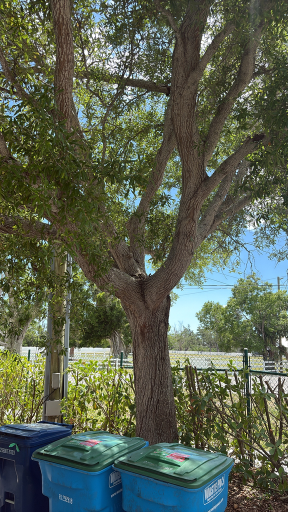

- A single large Live Oak can support over 500 species of caterpillars — more than almost any other tree genus in North America. Those caterpillars are what most songbirds feed their nestlings.
- The Live Oak hull of the USS Constitution was so dense that British cannonballs bounced off it during the War of 1812 — that's how she earned the name 'Old Ironsides.'
- It's not truly evergreen — it drops its old leaves just as the new ones arrive in spring, so it's never bare but never truly holds the same leaves for years.
- The Angel Oak in South Carolina, a Live Oak, has branches that stretch 187 feet tip to tip and is estimated at 400 to 500 years old.
Native to the coastal plains of the southeastern United States from Virginia south through all of Florida and west to Texas and Oklahoma. One of the most iconic trees of the American South, naturally found in sandy soils near the coast but thriving inland wherever drainage is good.
- The USS Constitution story is one of the great moments in American tree history. The ship's frame was built from Live Oak harvested from St. Simons Island, Georgia — the wood is so extraordinarily dense that during the War of 1812, British cannonballs fired at close range literally bounced off the hull. A witness reportedly cried out 'her sides are made of iron!' and the name Old Ironsides stuck.
- The ship is still commissioned, still docked in Boston, and still maintained by the Navy — the oldest commissioned warship in the world. Live Oak built her.
- The ecological significance is equally outsized. Entomologist Doug Tallamy's research established that oak trees in the genus Quercus support more caterpillar species than any other tree genus in North America — over 500 species on a single mature tree.
- Since most songbirds feed caterpillars to their nestlings almost exclusively, every Live Oak is essentially a caterpillar farm that powers the local bird population. Every large Live Oak in the park is doing more wildlife work than any other plant here.
- The name 'live' refers simply to the fact that it stays green in winter — unlike the deciduous oaks that shed their leaves. It was novel enough to early European settlers that it warranted a name.
The Live Oak at Palma Sola is one of the most ecologically productive plants in the collection. As an oak, it supports more caterpillar species than almost any other tree genus in North America — and those caterpillars are the primary food source for nearly every songbird feeding nestlings.
Acorns feed black bears, white-tailed deer, turkeys, Blue Jays, Wood Ducks, squirrels, and many other species. The dense canopy hosts nesting songbirds. The branches support Spanish moss, bromeliads, and other epiphytes that create micro-habitats within the tree. The bark hosts lichens, mosses, and cavity-nesting insects. A mature Live Oak is less a tree than an ecosystem.
retains its leaves through winter and drops them as new leaves emerge in spring. Never bare, never holding truly old leaves — a continuous rolling turnover of foliage.
Small, inconspicuous, wind-pollinated catkins in spring, before or as new leaves emerge.
Small, dark, oblong — ripening in fall. Sweet relative to other oaks; historically eaten by Indigenous peoples after tannin leaching or roasting. A sweet oil extracted from them was compared to olive oil.
1 to 4 inches long, elliptic, leathery, dark glossy green above, paler and often fuzzy below. Margins mostly entire (untoothed).
Dark gray-brown, furrowed in irregular flat-topped ridges. Often covered with lichens and mosses on older specimens.
Massive spreading crown — often wider than tall. Branches characteristically curved and horizontal, naturally ideal for ship timbers.
The massive horizontal spreading crown is the signature form — few trees command more horizontal space. In spring, watch for the cascade of tiny catkins and new reddish leaf flush emerging simultaneously as old leaves drop. In fall, look for the small dark acorns and the wildlife they bring.
Raw acorns contain tannins that upset the stomach if eaten in quantity. With leaching or roasting they become an important Indigenous food, and the oil was once compared to olive oil.
The leaves, bark, and other parts pose no hazard. For dogs, a large volume of acorns can cause stomach upset from the tannins.

- © Randall Carter (CC-BY-NC), via iNaturalist